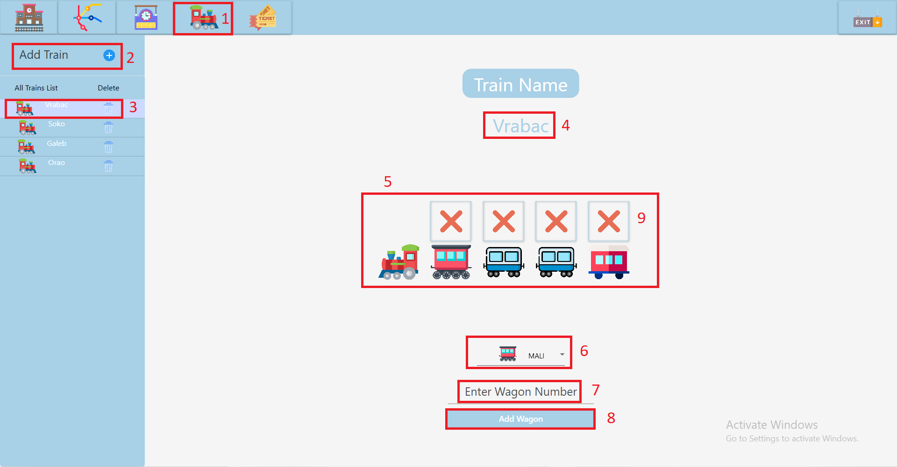

Prikaz stranice za Manipulaciju Vozovima:

1. Klikom na ikonicu voza se otvara Train page.
2. Dodavanje novog voza u sistem popunjavanjem tekstualnog polja i pritiskom na plus znak.
3. Dvoklikom na ikonicu voza se otvara prikaz pojedinacnog voza i nad njim je moguce vrsiti manipulaciju.
4. Ispisuje se ime voza.
5. Graficki prikaz voza i kompozicije vagona.
6. Odabir tipa vagona(prilikom dodavanja novog voza).
7. Odabir pozicije vagona(prilikom dodavanja novog voza).
8. Dodavanje novog voza u kompoziciju.
9. Brisanje vagona iz vozne kompozicije.